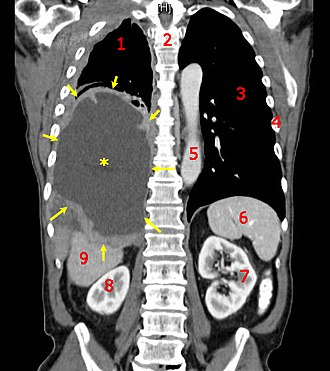
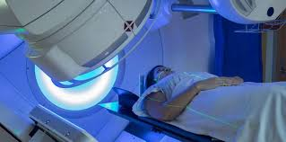

Cancer
Cancer is a group of diseases involving abnormal cell growth with the potential to invade or spread to other parts of the body.
These contrast with benign tumors, which do not spread. Possible signs and symptoms include a lump, abnormal bleeding, prolonged cough, unexplained weight loss, and a change in bowel movements.
While these symptoms may indicate cancer, they can also have other causes. Over 100 types of cancers affect humans.
Tobacco use is the cause of about 22% of cancer deaths. Another 10% are due to obesity, poor diet, lack of physical activity, or excessive alcohol consumption.
Other factors include certain infections, exposure to ionizing radiation, and environmental pollutants. Infection with specific viruses, bacteria, and parasites is an environmental factor causing approximately 16-20% of cancers worldwide.

A coronal CT scan showing a malignant mesothelioma
These environmental factors act, at least partly, by changing the genes of a cell. Typically, many genetic changes are required before cancer develops. Approximately 5–10% of cancers are due to inherited genetic defects. Cancer can be detected by certain signs and symptoms or screening tests.It is then typically further investigated by medical imaging and confirmed by biopsy.
The risk of developing certain cancers can be reduced by not smoking, maintaining a healthy weight, limiting alcohol intake, eating plenty of vegetables, fruits, and whole grains, vaccination against certain infectious diseases, limiting consumption of processed meat and red meat, and limiting exposure to direct sunlight.Early detection through screening is useful for cervical and colorectal cancer. The benefits of screening for breast cancer are controversial. Cancer is often treated with some combination of radiation therapy, surgery, chemotherapy and targeted therapy. Pain and symptom management are an important part of care.[2] Palliative care is particularly important in people with advanced disease.[2] The chance of survival depends on the type of cancer and extent of disease at the start of treatment.[11] In children under 15 at diagnosis, the five-year survival rate in the developed world is on average 80%. For cancer in the United States, the average five-year survival rate is 66% for all ages.
In 2015, about 90.5 million people worldwide had cancer. In 2019, annual cancer cases grew by 23.6 million people, and there were 10 million deaths worldwide, representing over the previous decade increases of 26% and 21%, respectively.
Etymology and definitions
The word comes from the ancient Greek καρκίνος, meaning 'crab' and 'tumor'. Greek physicians Hippocrates and Galen, among others, noted the similarity of crabs to some tumors with swollen veins. The word was introduced in English in the modern medical sense around 1600.
All tumor cells show the six hallmarks of cancer. These characteristics are required to produce a malignant tumor. They include:
- Cell growth and division absent the proper signals
- Continuous growth and division even given contrary signals
- Avoidance of programmed cell death
- Limitless number of cell divisions
- Promoting blood vessel construction
- Invasion of tissue and formation of metastases
The progression from normal cells to cells that can form a detectable mass to cancer involves multiple steps known as malignant progression.
The problem
Cancer is a leading cause of death worldwide, accounting for nearly 10 million deaths in 2020 (1).
The most common in 2020 (in terms of new cases of cancer) were:
- breast (2.26 million cases)
- lung (2.21 million cases)
- colon and rectum (1.93 million cases)
- prostate (1.41 million cases)
- skin (non-melanoma) (1.20 million cases)
- stomach (1.09 million cases)
The most common causes of cancer death in 2020 were:
- lung (1.80 million deaths)
- colon and rectum (916 000 deaths)
- liver (830 000 deaths)
- stomach (769 000 deaths)
- breast (685 000 deaths)
Each year, approximately 400 000 children develop cancer. The most common cancers vary between countries. Cervical cancer is the most common in 23 countries.
Causes
Cancer arises from the transformation of normal cells into tumour cells in a multi-stage process that generally progresses from a pre-cancerous lesion to a malignant tumour. These changes are the result of the interaction between a person's genetic factors and three categories of external agents, including:
- physical carcinogens, such as ultraviolet and ionizing radiation
- chemical carcinogens, such as asbestos, components of tobacco smoke, alcohol, aflatoxin (a food contaminant), and arsenic (a drinking water contaminant)
- biological carcinogens, such as infections from certain viruses, bacteria, or parasites.
Treatment
A correct cancer diagnosis is essential for appropriate and effective treatment because every cancer type requires a specific treatment regimen. Treatment usually includes surgery, radiotherapy, and/or systemic therapy (chemotherapy, hormonal treatments, targeted biological therapies). Proper selection of a treatment regimen takes into consideration both the cancer and the individual being treated. Completion of the treatment protocol in a defined period of time is important to achieve the predicted therapeutic result.

Determining the goals of treatment is an important first step. The primary goal is generally to cure cancer or to considerably prolong life. Improving the patient's quality of life is also an important goal. This can be achieved by support for the patient’s physical, psychosocial and spiritual well-being and palliative care in terminal stages of cancer.